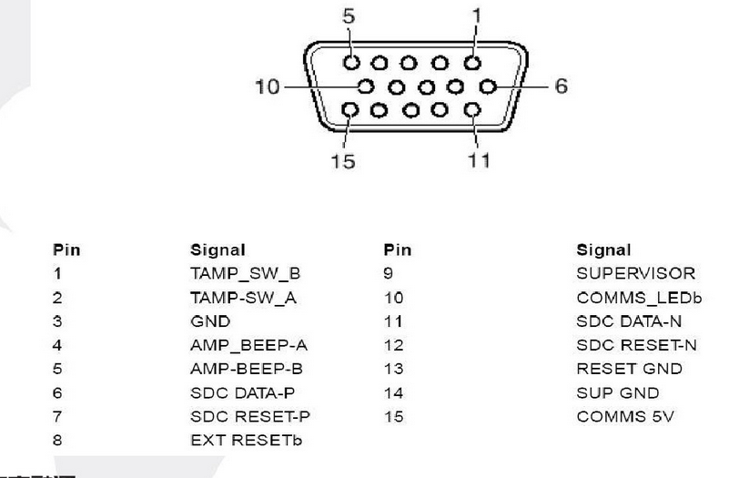

Menu
Menu
SDC Pinouts.
D 15pin HD

P4 & P3 SDC NVRam Clear:
Find the bank of 8 switches
on the SDC board.
- Switches 2 and 8 may already be set on.
- Turn switches 3 and 8 on.
- Power the ATM up.
- Give it 45 seconds. Or till it boots to a NV-Ram clear completed screen (P4).
- Turn the ATM power off.
- Reset the 2 dip switches.